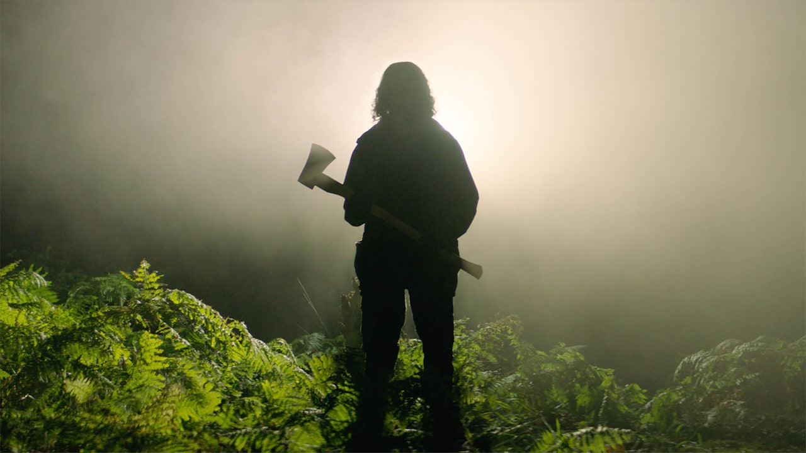

LIFESTYLE
Премьеры фестиваля «Сандэнс» 2021, которые нельзя пропустить
От перевоплощения Дэниела Калуя в предводителя «Черных пантер» до первой полнометражной ленты Робин Райт в качестве режиссера — мы отобрали десять самых обсуждаемых картин смотра
{kind=link}
Коронавирус и связанный с ним кризис не погубили кино. Где подтверждение? Загляните в лайнап фестиваля «Сандэнс» — он полон претендентов на «Оскар» и провокационных независимых драм. Все как было до пандемии, так и осталось. Смотр пройдет с 28 января по 3 февраля в гибридном формате. Офлайн-мероприятия проведут со строжайшим соблюдением социальной дистанции, разумеется. Среди главных релизов — режиссерские работы Ребекки Холл и Робин Райт, политически заряженный трибьют одному из героев 1960-х и не один фильм о конце света. Рассказываем, что из этого списка следует посмотреть обязательно.
Иуда и черный мессия
В своей ленте режиссер Шака Кинг рассказал о скандальном убийстве предводителя «Черных пантер» Фреда Хэмптона сотрудниками ФБР — история основана на реальных событиях. На главные роли Кинг позвал двух крайне харизматичных актеров: самого лидера революционного движения сыграл Дэниел Калуя, а предавшего его лазутчика — Лакит Стэнфилд. Судя по трейлеру, нас ожидает изобилие воодушевляющих речей и печальная развязка, готовьтесь.
Passing
Фильм Passing — экранизация очень прогрессивного для своего времени романа Неллы Ларсен с Ребеккой Холл в кресле режиссера (для актрисы это дебют). 1920-е годы, Нью-Йорк, две подруги детства разбираются с семейными неурядицами и проблемами межрасовых отношений. Роли этих самых подруг исполнили Тесса Томпсон и Рут Негга, а их непутевых мужей — Андре Холланд и Александр Скарсгард.
Земля
Робин Райт тоже взялась за режиссуру. Ее первая полнометражная лента — история женщины, которая в поисках избавления от личной драмы отправляется в поход по суровым Скалистым горам. Задумчивое кино о человеческой выносливости: героиня сражается со стихиями, и душевная боль постепенно уходит. Главную героиню Райт сыграла сама.
I Was a Simple Man
Констанс Ву, известная многим по фильмам «Безумно богатые азиаты» и «Стриптизерши», исполнила одну из главных ролей в новой картине режиссера Кристофера Макото Йоги I Was a Simple Man. В центре внимания — отец семейства на пороге смерти, окруженный призраками собственного прошлого. Пробивающая на слезы сюрреалистичная лента, снятая в декорациях туманного северного побережья гавайского острова Оаху.
Джон и дыра
У психологической драмы режиссера Паскуаля Систо «Джон и дыра» довольно жуткий сюжет. Без очевидной, казалось бы, на то причины 13-летний мальчик (Чарли Шотуэлл) решает упрятать всю свою родню (Дженнифер Эль, Таисса Фармига, Майкл С. Холл) в яме, она же дыра. Очень непростой фильм о взрослении, какого вы никогда прежде не видели.
Mayday
Первые партии в захватывающем боевике Mayday режиссера Карен Синорр достались Грейс Ван Паттен, Мии Гот и Джульетт Льюис. По сюжету главная героиня оказывается в альтернативной реальности, где присоединяется к женскому войску. Войне, в которой это войско сражается, не видно конца. А вот времени на поиски дороги домой катастрофически мало.
On the Count of Three
Режиссерский дебют актера и комика Джеррода Кармайкла On the Count of Three претендует на лавры черной как смоль комедии. Коротко о сюжете: двое друзей договариваются покончить с собой. Их сыграли сам Кармайкл и любимец всех инди-режиссеров Кристофер Эбботт (Чарли из «Девочек»). На вторых ролях — уморительные Тиффани Хэддиш и Генри Уинклер.
How It Ends
Куда бежать, когда надвигается конец света? На этот вопрос пытается найти ответ апокалиптическая комедия Дэрила Вейна и Зои Листер-Джонс. Последняя исполнила в фильме главную роль — беззаботной девушки, которая получает приглашение на невероятную вечеринку, и все бы ничего, вот только в этот самый день гигантский астероид должен столкнуться с Землей и разнести ее в клочья. Смех и зрелище обеспечены: в кадре еще и звезды первой величины — Оливия Уайлд и Хелен Хант.
В Земле
Злободневный ужастик Бена Уитли, режиссера недавно вышедшей «Ребекки». По сюжету весь мир в исступлении разрабатывает лекарство от смертоносного вируса, тем временем ученый и смотритель парка сбегают от происходящего в глушь. Чем фильм хорош? Актерский состав пестрит восходящими звездами, за игрой которых очень интересно наблюдать: Джоэл Фрай, Хейли Сквайрс, Эллора Торчия. А от мрачных кадров по спине бегут мурашки.
Mass
Впечатляющая работа режиссера Фрэна Кранца о том, какой горькой бывает утрата и какими глубокими бывают разногласия. По сюжету две пары родителей встречаются спустя много лет после перестрелки, разделившей их жизни на до и после. Четыре яркие роли исполнили ветераны экрана — Джейсон Айзекс, Марта Плимптон, Энн Дауд и Рид Бирни. Фильм стоит посмотреть хотя бы из-за этого.